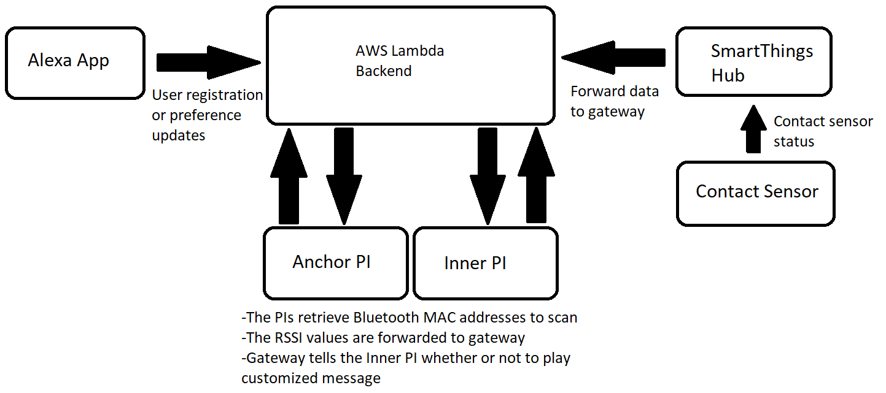
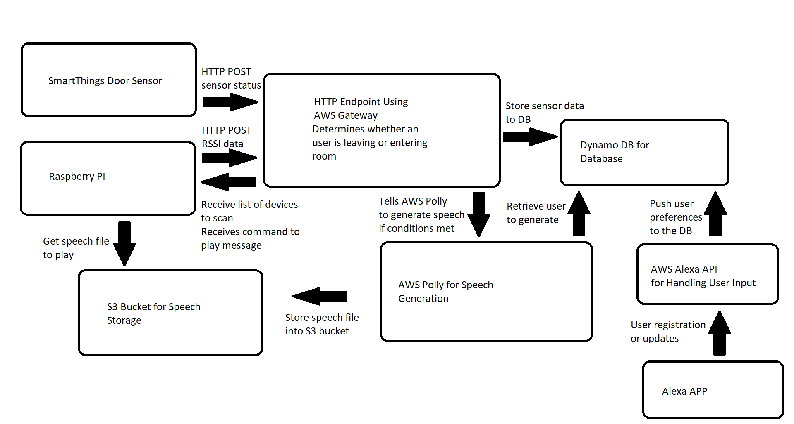
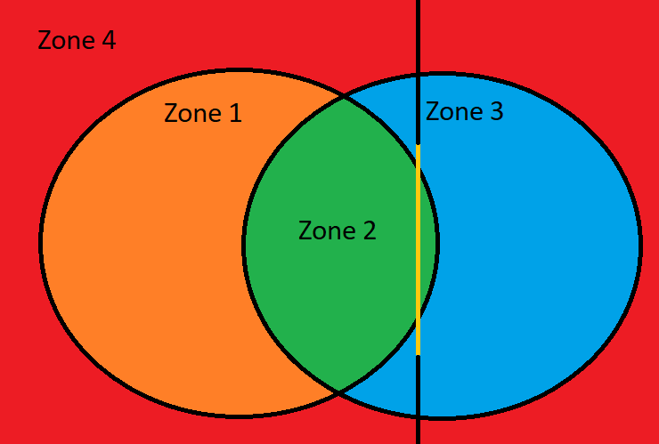

UCLA ECE M202 Project, Winter 2019
By Sydney Hung and Michael Lo
With the recent release of Amazon’s Alexa Contact and Motion Sensor API, users were able to get the status of their sensors. Users would just need to set a routine in the Alexa app and Alexa would do something when a condition from the sensor is met. For example, Alexa can remind users that a door has been opened for too long or she can have other routines fire up when a door opens.
Without additional sensors and programming customization, Alexa’s response cannot be crafted towards a specific user. Alexa’s response can only be based off of sensor states. Most sensors themselves do not contain information so that a specific user response can be crafted. Our project will attempt to solve this problem by integrating additional sensors so that an unique response is created per user. Our project will attempt to recognize users that walk through a door and have a special play depending on which user goes through the door.
Before the introduction of the Contact and Motion Sensor API, smart devices manufacturers integrated their devices with their own cloud services of choice. One popular smart device cloud service is SmartThings, developed by Samsung. SmartThings cloud services can query devices and notify users the status of their devices by sending notifications to the users phone. The service does not have a voice notification feature. Alexa Contact and Motion Sensor API offers the benefit of voice services as an addition to these cloud services or as a separate package for new developers. However, the APIs provided by Amazon and other smart device companies cannot provide additional context of a change in status of a smart device. Third party apps developed on these platforms can generate additional responses but not as detailed as what our project will attempt. As an example, the NotifyMe app written for Alexa can let users know how long a contact sensor has been left open by allowing the user to customize how long to wait before sending the notification.
Our approach was to use additional sensors and integrate each sensor data to our backend. We already had a door sensor which could report the state of the door. The door sensor uses Z-Wave to communicate. This meant a Z-Wave compliant device was needed and the SmartThings Hub was used. The door sensor would now report status and some other information such as battery health to the SmartThings Hub. We needed to direct this data to our backend. To do so, we wrote a custom SmartThings app that told the SmartThings Hub to send a selected door sensor’s open/close status to our AWS gateway by using HTTP POST. Once our gateway received a door sensors data, it would update our database which kept track of the state of the door.
For user detection, we decided to choose use Bluetooth sensing. Most users carry around a smartphone that supports Bluetooth. Another benefit is that Bluetooth is short ranged meaning we can get distance readings within a few meters. This can help us narrow down where the user is with respect to the door. Our user detection system was done by bash scripting which ran on 2 raspberry PIs. One is the anchor which is mounted next to the door sensor. The other is the inner which is to help determine if an user is leaving or entering a room. When first starting up the PIs, the PIs retrieve the Bluetooth MAC addresses stored in our database in AWS through HTTP POST. Once the addresses are retrieved, it would continuously poll for each of the devices by attempting to connect. When it is attempting to connect, it will run another function to read the RSSI value. Once the connection timeout is reached, it sends the RSSI value back to AWS through HTTP POST. Once received, the server then processes the distance data. Depending on the state of the door, and the values it received from the PI’s, the server will then generate a specific mp3 file and store it in a s3 bucket. The PI then retrieves the mp3 by downloading it and then plays the sound file before going back to poll the user’s phone. We have setup so that the inner PI plays the sound file instead.
As for user inputs, the user registers their device through the Alexa app. The app will then send to the server the user’s name and Bluetooth MAC address. These values are then stored into the database.
We created some scenarios that are most likely to happen. Our experiment expectation is that an user has to be transit through certain states for the correct response to happen. There are only two states that can trigger a voice response. Other states are invalid in which no response is generated.
The user is getting both >= 0 readings from the anchor and inner sensor and door is open. Then the user transitions by going through the door in which anchor still reads >= 0 but the inner now reads < 0. This will generate a goodbye message for that user and play it through a speaker.
The user is getting >= 0 from the anchor but is getting < 0 from the inner sensor and door is open. The user then walks through the door which causes both sensors to read >= 0. This generates a welcome message for that user and play it through the speaker.
Our system performed as expected. When an user opens the door and walks through it, a message is generated and played depending on who it is and which way did the inner sensor’s reading changed to. Our system was able to perform with multiple users too. When one person was near the door and another walked through, a message was generated and played for the user that did walk through the door. When both users walked through, two separate messages were generated and played.
There were some cases which would trigger false message generations. The follow diagram illustrates the problem. zone 1 represents the area where inner sensor reads >= 0 RSSI values, zone 3 represents the area where anchor sensor reads >= 0 RSSI values, zone 2 is the overlapped area where both anchor and inner sensor reads >= 0, and zone 4 represents the area where both sensors receive < 0 RSSI values. The yellow line is the doorway. If the user from zone 4 entered into zone 2, then the server would think that an user entered if the door was in open status. Similarly, if an user went from zone 2 to zone 4, then the server would have thought that the user left the room.
One major problem when collecting our results was that the RSSI values being read were affected by noise. Readings were inconsistent and sometimes it would think the user is in a different zone because of those readings. For example, the user is in zone 2, but the inner sensor read a negative RSSI value, putting the user in zone 3 instead. This also made our logic handling heavily dependent on the inner sensor’s placement with respect to the door. If it is too far there is no overlap, if it is too close, it will take longer to generate messages.
Our system also started to feel slow when a valid event happened. This is because of the sequential operations of the PI script. Since there were multiple users to scan, it did it sequentially. On top of that, for every user, it had to send the reading to the server and wait for the server’s command. This made it that the period to get back to one user’s reading dependent on number of Bluetooth MAC addresses to watch for.
We would like to improve the Bluetooth sensing algorithm. The RSSI values being read can be impacted by interference which we saw during our testing. This interference can cause our server’s logic to misinterpret whether an user is near the door not. One way is to adjust the transmit power of the Bluetooth hardware so that the user phone sees an attempt to connect at a much smaller radius. This means if the phone is in that smaller radius, we are able to determine if an user is near the door or not.
Instead of using range sensing, we could utilize image recognition. We could have a device recognize a user’s face and then tell the server who it is that walks through the door. Then we can use machine learning to determine whether an user has actually walked through the door. This would let the server know whether an user is entering or exiting a room.
Another improvement we would like to implement is response time. Currently, the system gets slower as more users are added because our system handles tasks in a sequence. This means take it will take longer to get a reading from the same user as it has to go through the other users. One way to fix this is that for every MAC address, we could spawn a new bash shell to run it in parallel. There is also some delay on the server side as we generate sound files every time and download it when it only needs to be done once.